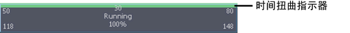

使用时间扭曲可以在不修改片段动画曲线的情况下更改片段的计时。通常，您将使用时间扭曲反转片段中的动画，或者缓入或缓出片段的动画。
创建或复制片段时可以自动创建时间扭曲，或者可以选择现有片段，然后为其创建时间扭曲。请参见创建片段选项。默认情况下，创建片段时不创建时间扭曲。
为片段创建时间扭曲时，时间扭曲曲线将添加到片段层次中片段的上方，片段上将显示绿色条。请参见时间扭曲。可以对该时间扭曲曲线进行操纵，调节时间扭曲对动画片段中动画的影响方式。
注： 多个时间扭曲会降低性能，因此应少用时间扭曲。
为片段创建时间扭曲
- 选择要为其创建时间扭曲的片段。
- 执行下列操作之一：
- 在 Trax 菜单栏中，选择。
- 在片段上单击鼠标右键，然后从显示的菜单中选择“创建时间扭曲”(Create Time Warp)。

将为该片段节点启用“时间扭曲启用”(Time Warp Enable)属性，新时间扭曲曲线将显示在片段中。默认情况下，时间扭曲曲线范围在 0 到 100 之间，表示其动画片段的百分比。时间 0 是片段的开始，时间 100 是片段的结束。
在轨迹视图区域中，片段上将显示绿色条，表示该片段现在受时间扭曲影响。
编辑时间扭曲
- 选择有时间扭曲的片段。
- 在 Trax 工具栏中，单击“图形动画曲线”
 按钮。
按钮。
- 在“曲线图编辑器大纲视图”(Graph Editor outliner)中，选择时间扭曲并单击“框显全部”(Frame All)
 按钮或按 f 框显时间扭曲曲线。
按钮或按 f 框显时间扭曲曲线。
- 在图表视图中，使用“插入关键帧工具”(Insert Keys Tool)插入关键帧并使用“移动工具”(Move Tool)调整曲线。
在图表视图中借助这些工具进行工作时，请使用鼠标中键。
在创建片段时创建时间扭曲
- 选择要将其动画置入片段的角色。
- 在 Trax 菜单栏中，选择“动画 > 创建片段”(Animate > Create Clip) >
 。
。
此时将显示“创建片段选项”(Create Clip Options)窗口。
- 启用“创建时间扭曲曲线”(Create Time Warp Curve)。
此时将显示片段，其中包含片段的角色动画曲线和活动的时间扭曲曲线。现在，每次创建片段时，将为每个片段创建活动时间扭曲曲线。
启用或禁用时间扭曲曲线
- 选择包含要启用或禁用的时间扭曲曲线的片段。
- 在“属性编辑器”(Attribute Editor)或“通道盒”(Channel Box)中，将“时间扭曲启用”(Time Warp Enable)属性设置为启用或禁用。
禁用创建片段时自动创建时间扭曲
- 在 Trax 菜单栏中，选择“动画 > 创建片段”(Animate > Create Clip) > 。
此时将显示“创建片段选项”(Create Clip Options)窗口。
- 禁用“创建时间扭曲曲线”(Create Time Warp Curve)。